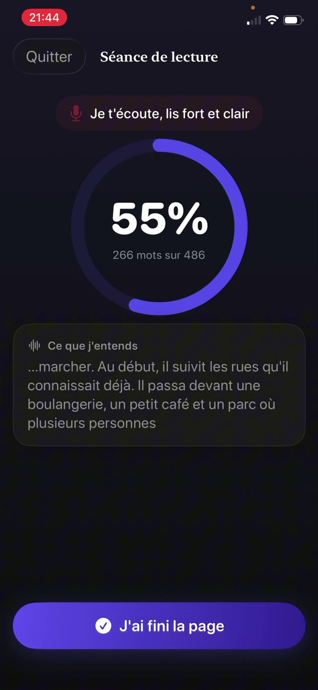

Cela compte parce que c'est le pont entre décoder et comprendre. Un enfant qui dépense toute son attention à déchiffrer les mots n'en a plus pour le sens de la phrase. L'exercice qui construit cela est simple, ancien et un peu démodé : lire à voix haute, presque tous les jours, une dizaine de minutes.


Les trois composantes de la fluidité
- Exactitude. Lire les mots réellement présents sur la page, pas ceux que leur forme suggère.
- Débit. Un rythme de conversation. Trop lent casse la phrase ; foncer signifie en général que la compréhension a été abandonnée.
- Prosodie. Expression et phrasé : marquer les virgules, monter sur une question, donner une voix à un personnage. C'est la partie qui prouve la compréhension.
Pourquoi à voix haute, et pourquoi à vous
La lecture silencieuse cache tout. Un enfant peut promener ses yeux sur une page pendant dix minutes sans rien absorber, et ni l'un ni l'autre ne le saurait.
Lire à voix haute rend le processus audible. Vous entendez les mots sautés, ceux devinés d'après la première lettre, les endroits où la phrase s'effondre. C'est aussi la seule version où une erreur peut être reprise à l'instant où elle se produit.
La routine de dix minutes
- Choisissez un livre légèrement en dessous de son seuil de frustration. Le travail de fluidité demande un texte qu'il peut lire presque entièrement, pas un texte qui lui résiste.
- Lancez un minuteur de dix minutes pour que la fin soit définie et non négociable.
- Faites-le lire à voix haute. Asseyez-vous assez près pour entendre, et résistez à l'envie de combler les silences.
- Notez les erreurs sans interrompre au milieu d'une phrase, sauf si le sens est perdu.
- À la fin, posez une vraie question sur ce qui s'est passé. Une seule. Pas un questionnaire.
Corriger sans tout gâcher
L'instinct est de sauter sur chaque erreur. Ne le faites pas. La correction permanente transforme la lecture en performance notée, et les enfants se retirent de ce sur quoi on les note.
Attendez la fin de la phrase. Si le sens a survécu à l'erreur, laissez passer. Sinon, dites le mot et poursuivez sans explication. Les explications sont pour plus tard, et surtout pour les erreurs qui reviennent.
Suivre les progrès sans chronomètre
Les mots par minute, c'est ce que mesure l'école, et c'est une mauvaise chose à poursuivre à la maison : les enfants chronométrés apprennent à foncer. Ce que vous voulez voir au fil des semaines, c'est un phrasé plus fluide, moins de blocages sur les mêmes mots, et plus d'expression.
Un simple relevé de ce qui a été lu et quand suffit. Il vous dit si la pratique a réellement lieu, ce qui est la variable la plus importante.
Une pratique qui tient son propre relevé
Guardian Reader écoute pendant que votre enfant lit à voix haute les pages scannées et compare ce qu'elle entend à ce texte exact, en affichant un pourcentage de correspondance en direct. Le seuil de réussite est réglable, donc un enfant qui apprend à lire n'est pas jugé selon le niveau d'un adolescent.
Chaque séance est enregistrée avec la date, les minutes, les pages et les mots réellement lus, ce qui donne une image honnête de la pratique sur toute l'année scolaire, sans que personne ait à remplir un tableau.
La lecture débloque l'écran.
Gratuit · Sans compte, sans suivi
Télécharger Guardian Reader pour iPhone